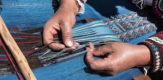
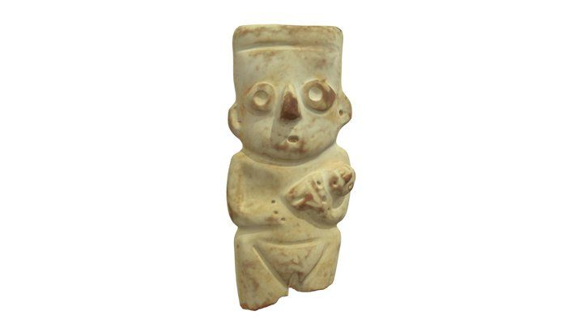
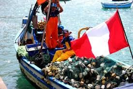
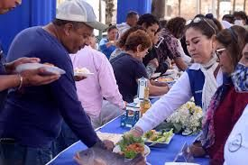

Tejidos Tradicionales
La tradición textil en Cerro Azul se remonta a épocas prehispánicas. Investigaciones arqueológicas han revelado que las mujeres de élite durante el Periodo Intermedio Tardío eran enterradas con los textiles en los que trabajaban al momento de su muerte.
Estos hallazgos incluyen telares, espadas de tejido, bolsas con ovillos de hilo y otros implementos relacionados con la producción textil. Esta práctica no solo destaca la importancia del tejido en la vida cotidiana, sino también su relevancia en contextos rituales y funerarios.

Artesanía Textil Contemporánea
En la actualidad, la artesanía textil sigue siendo una actividad significativa en Cerro Azul. Las técnicas tradicionales, como el uso del telar de cintura y el hilado manual, se mantienen vivas gracias a la dedicación de las artesanas locales. Estas mujeres elaboran una variedad de productos, incluyendo cinturones conocidos como "chumpis", que exhiben diseños y colores distintivos de la región.
Cerámicas
La cerámica es otra forma de expresión artística y cultural importante en la región. Los artesanos locales crean piezas utilizando técnicas tradicionales y materiales naturales como la arcilla y el barro.
- Diseños y patrones tradicionales: Las cerámicas presentan diseños que reflejan la cultura y la historia de la zona.
- Uso de materiales naturales: Los artesanos utilizan materiales naturales como la arcilla y el barro.
- Técnicas tradicionales: Los artesanos utilizan técnicas como la "cocción al aire libre".
- Variedad de piezas: Incluyen ollas, tazas, platos y figuras decorativas.

Pesca Artesanal
La pesca artesanal es otra actividad fundamental en Cerro Azul. Los antiguos habitantes de la zona desarrollaron técnicas avanzadas para la captura y conservación de productos marinos. Utilizaban embarcaciones de totora o madera, redes y anzuelos para la pesca. Además, implementaron métodos de secado y conservación del pescado.

Ferias y Promoción de la Artesanía
Cerro Azul es sede de eventos que promueven la artesanía regional. Por ejemplo, en marzo de 2024, se celebró la Feria Artesanal Regional de Lima en el marco del "Día del Artesano Peruano". Estas ferias ofrecen una plataforma para que los artesanos locales exhiban y comercialicen sus productos, fomentando la preservación y difusión de las tradiciones artesanales.
